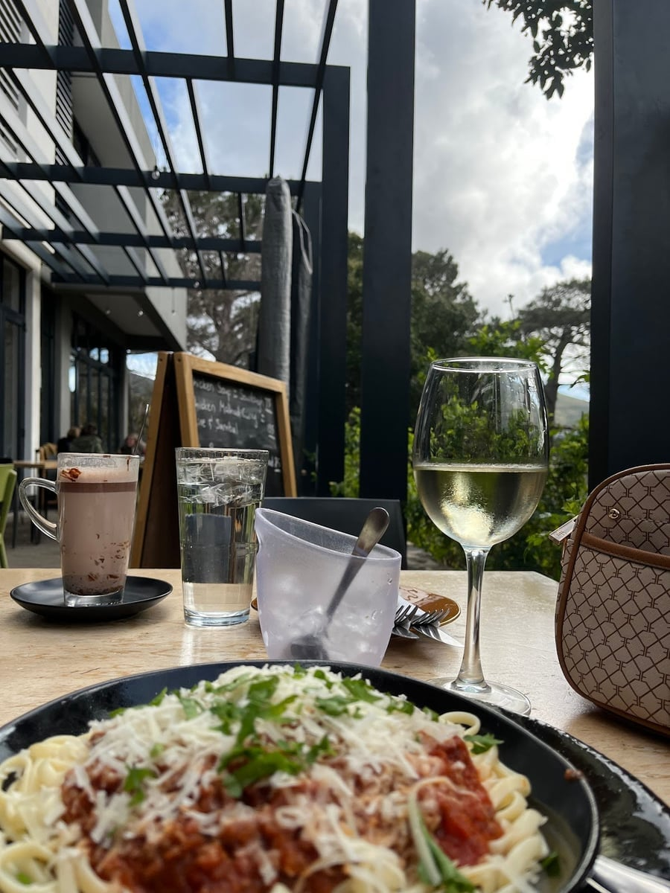

Cafe
Come for a relaxed breakfast or light lunch beside the park, with leafy shade, family-friendly space, and a hillside outlook over Cape Town.
Get In TouchDeer Park Café is a relaxed Vredehoek café serving breakfasts, light lunches and home-style meals for locals, walkers, families and visitors making their way through the hillside park. The setting is part of what people love most: open air, greenery, sea and city views, and a pace that feels slower than the rest of town. It is the kind of place where a quick coffee can easily turn into a long catch-up over breakfast.
What makes the café feel distinctive is the way the menu balances familiar favourites with a sense of weekly variety. Alongside everyday café staples, the changing menu keeps things interesting and source material points to authentic Indian specials as part of that rhythm. That combination gives regulars a reason to come back while still keeping the experience easy, welcoming and unpretentious.
The approach at Deer Park Café is simple and honest: serve good food in a family-friendly space where people feel comfortable lingering. Whether you are meeting friends after a morning walk, sitting down with children after time at the park, or looking for a light lunch with a view, the café aims to make the visit feel warm, straightforward and worth repeating. The result is a neighbourhood spot that feels rooted in its surroundings rather than separate from them.


Deer Park Café focuses on café dining that suits everyday neighbourhood life: breakfasts worth slowing down for, light lunches with a view, and home-style meals shaped by weekly variety and a family-friendly setting.

Start the day with a proper breakfast in a setting that feels calm and open rather than rushed. It is ideal for residents, park visitors and anyone wanting good coffee and a generous morning meal before heading into the city.
For midday visitors, the café offers light lunches and comforting meals that suit a casual catch-up or an easy family outing. The food style stays approachable and satisfying, with the kind of honest flavour that works equally well after a walk or as a laid-back lunch stop.
The menu changes through the week, giving regular guests something new to look forward to. Source-backed details also highlight authentic Indian specials, adding variety without losing the café's simple, home-cooked feel.


Here is what our clients say about us.
"Deer Park Café, Cape Town Deer Park Café is an absolute gem tucked into the natural beauty of Cape Town. The setting alone makes it special—surrounded by greenery, fresh mountain air, and a calm, relaxed atmosphere that instantly slows you down. The food is fresh, wholesome, and thoughtfully prepared, perfect for a relaxed breakfast or lunch after a walk or hike. Coffee is excellent, and everything feels simple in the best possible way—honest flavours, generous portions, and consistently good qu"— preba moodley, 5/5 Google review, ⭐⭐⭐⭐⭐
"I ordered the Eggs Benedict and my friend had the Egg Croissant. Unluckily, our order was missed and we had quite a long wait, though the staff did compensate with a free decaf cappuccino which was appreciated. When the food arrived, it was really delicious – the Eggs Benedict in particular was great. Only downside was the sourdough bread being a bit too hard. The café itself is very well maintained with a nice, welcoming atmosphere. Overall, a good experience with some room for improvement."— Jhett Muegge, 4/5 Google review, ⭐⭐⭐⭐⭐
"Great Little family spot close to the deer park in Cape Town. The food is a mix of everything but done quite well. Honest tasty food with a certain Raffinesse. Well curated wine list rounds up the experience. Highlight of the place is the big playground. Great place for families"— Peter Badurek, 5/5 Google review, ⭐⭐⭐⭐⭐
We'd love to hear from you — reach out to us anytime.